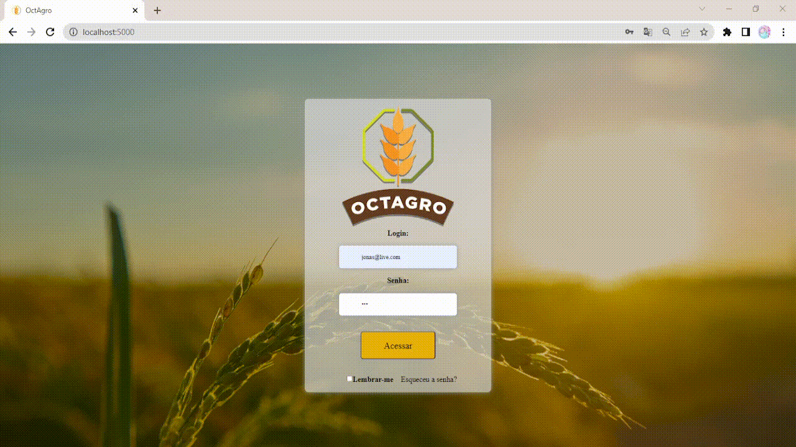

OctAgro - Sistema de Inspeção de Entrada para Controle de Recebimento de Grãos

2023.1
Desenvolvido para o Projeto Integrador 2 da FATEC, com a Jaia Software como cliente. Utilizando as metodologias Scrum, atuei como Development Team.
Nossa parceira, a empresa Jaia Software, encara o desafio de aprimorar a gestão do controle de recebimento de grãos na agroindústria. Nossa proposta visa superar os obstáculos encontrados no processo, garantindo critérios de aprovação rigorosos e relatórios abrangentes para otimizar a eficiência operacional. As principais dificuldades identificadas incluem a falta de um sistema centralizado para inspeção de entrada, o que impacta a segurança, qualidade, manutenção e gerenciamento de riscos.
Acessar Repositório OctAgroDificuldades
A ausência de um sistema eficaz de inspeção de entrada prejudica a identificação precoce de não conformidades. Isso abrange desde a inspeção da entrada da mercadoria, análise dos grãos e até a gestão de processos organizacionais, internos e externos. Além disso, a falta de critérios claros para o que será inspecionado, a periodicidade e os objetivos compromete a eficiência operacional.
Proposta de Solução
Desenvolver um Sistema de Inspeção de Entrada especializado, com foco na agroindústria. Isso facilitará a transição para um novo sistema de controle, melhorando a organização, a rastreabilidade e a colaboração entre todas as etapas do processo. O software permitirá o cadastro de usuários com diferentes perfis, definindo responsabilidades específicas para análise, recebimento e aprovação. A metodologia de recebimento será dividida em quatro etapas: entrada de materiais, conferência quantitativa, conferência qualitativa e regularização. Essa solução visa oferecer uma interface intuitiva, amigável e altamente usável, proporcionando uma gestão eficaz do controle de recebimento de grãos na agroindústria.

Tecnologias Utilizadas
-
JavaScript:
Saiba mais
JavaScript é uma linguagem de programação de alto nível, amplamente utilizada para desenvolvimento web. Ela permite a criação de interações dinâmicas em páginas web e é suportada pelos navegadores modernos. O JavaScript foi muito importante para o desenvolvimento do front-end, principalmente por possibilitar chamar a API em Java, através de requisições assíncronas, de forma atualizar dinamicamente, por meio de interação do Usuário com o DOM, páginas em HTML e CSS. -
React:
Saiba mais
React é uma biblioteca de JavaScript para construção de interfaces de usuário (UI). Desenvolvida pelo Facebook, ela permite a criação de componentes reutilizáveis que atualizam automaticamente quando os dados mudam. React é amplamente usado no desenvolvimento de aplicações web interativas e single-page. Essa biblioteca desempenhou um papel vital no avanço do front-end, permitindo uma abordagem fluida, atualizando partes específicas da página sem recarregar tudo. Através dele foi possível gerenciar o estado da aplicação de maneira mais simples, proporcionando uma experiência de usuário mais responsiva. -
Node.js:
Saiba mais
Node.js é um ambiente de execução de código JavaScript do lado do servidor. Ele permite que desenvolvedores usem JavaScript para escrever scripts do lado do servidor, possibilitando a construção de aplicações escaláveis e de alta performance. Com o Node.js, é possível criar servidores web e APIs de forma eficiente. Essa tecnologia foi fundamental para o desenvolvimento backend, permitindo a execução de código JavaScript fora do navegador. Sua natureza assíncrona é particularmente valiosa para lidar com operações de I/O de forma eficiente, resultando em aplicações mais rápidas. -
Express.js:
Saiba mais
Express.js é um framework para Node.js que simplifica o desenvolvimento de aplicações web e APIs. Ele fornece uma série de recursos e ferramentas que facilitam a criação de rotas, gerenciamento de requisições e respostas, e integração com middlewares. Essa estrutura foi crucial para o desenvolvimento rápido e eficiente de aplicações backend. Foi possível criar rotas de forma simples, gerenciar o ciclo de vida das requisições e respostas, e integrar middleware para funcionalidades adicionais. Isso resulta em código mais organizado e fácil de manter. -
Sequelize:
Saiba mais
Sequelize é um ORM (Object-Relational Mapping) para Node.js, que suporta diversos bancos de dados relacionais, incluindo MySQL. Ele simplifica a interação com o banco de dados, permitindo que desenvolvedores usem JavaScript para realizar operações de CRUD de maneira mais intuitiva e eficiente. Essa biblioteca foi essencial para facilitar a comunicação entre a aplicação Node.js e o MySQL, além de permitir um pouco de Programação Orientada a Objetos para a aplicação. Com o Sequelize, foi possível definir modelos de dados em JavaScript que são mapeados para tabelas no banco de dados, tornando as operações de banco de dados mais orientadas a objetos e simplificando o desenvolvimento. -
MySQL:
Saiba mais
MySQL é um sistema de gerenciamento de banco de dados relacional de código aberto. Ele é amplamente utilizado para armazenar e recuperar dados em aplicativos, oferecendo desempenho confiável e suporte para consultas complexas. Escolha comum e segura, devido à utilização anterior por parte da equipe, para armazenar dados de maneira estruturada. É uma solução eficaz para organizar grandes conjuntos de informações, sendo especialmente valioso em aplicações web.
Contribuições Pessoais
Pela primeira vez, desenvolvi uma aplicação fullstack. Nesse projeto, busquei implementar uma arquitetura MERN, criando uma aplicação web que integrasse todas as tecnologias mencionadas. Inicialmente, minha intenção era focar apenas no backend; portanto, estruturei essa parte do projeto e busquei aplicar novos conhecimentos que pesquisei durante as férias, como a Arquitetura Model-View-Controller e ORM. Isso se deu porque a aplicação anterior estava muito rígida e monolítica. O aprendizado rápido e a flexibilidade proporcionados pelo stack MERN me motivaram a tentar aprender também o desenvolvimento frontend, algo que inicialmente não estava nos meus planos. Ao estudar React, percebi que poderia ser uma experiência interessante. Assim, em todas as sprints, atuei como fullstack, concentrando-me especialmente no mapeamento dos dados da API para o frontend, utilizando Axios, e assimilando conceitos como useState, useEffect, Hook e Context.
Hard Skills
- JavaScript: contato com esta linguagem, pude aprender como a linguagem funcionava, principalmente novos conceitos como assincronia e programação funcional. Por parte do backend as coisas se saíram bem muito devido ao Express e Sequelize , já no frontend, muitas coisas ainda eram abstratas e fugiam do meu conhecimento então, entregamos, mas com muita coisa por aprender.
- React: Parte teórica ainda por aprender, na prática já compreendi conceitos essenciais e funcionais
- MySQL: Através do ORM do Sequelize, a manipulação de queries diretamente quase não foi utilizada, o que melhorou foi a Modelagem, mas que poderia ser melhor pensada e estruturada
Soft Skills
- Proatividade: Tento sempre sem o mais proativo possível na equipe, saindo do backend e programando também no frontend.
- Autonomia: Quando me atribui tarefas, tento fazê-las e concluí-las por conta própria, pedindo ajuda após alguns dias procurando a solução.
- Comunicação: A comunição nesse projeto foi algo muito positiva, encontrei um grupo muito bom e produtivo. Tivemos muitas conversas na pré Sprint que nos fez entender o produto muito bem. Saíram muitos integrantes durante as sprints, mas conseguimos conduzir o projeto até o final, trabalhando e estudando para suprir as necessidades tecnológicas e de pessoas que enfrentamos.
- Entrega e Resultados: Tivemos que enfrentar muitas horas programando para entregar os resultados, em todas as sprints tivemos que programar por horas extensas nos finais de semana, devido à saída inexperada de membros e falta de conhecimento técnico nas novas tecnologias, mas principalmente pois prometemos features demais.